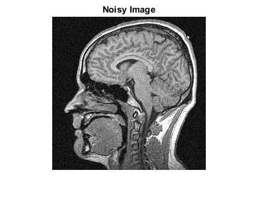
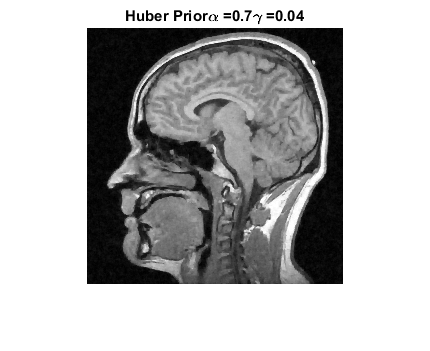
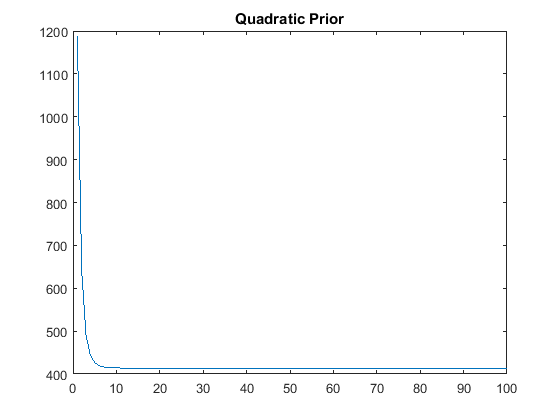
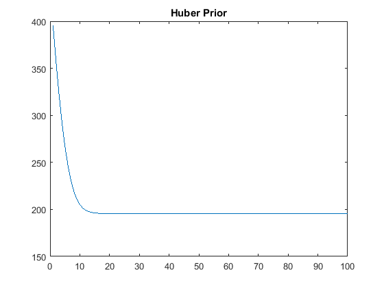
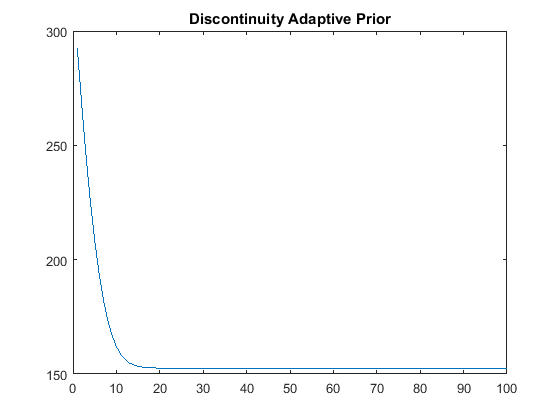

Contents
Q2
addpath('../../1/code');
load('../data/assignmentImageDenoisingBrainNoisy.mat');
[m,n] = size(imageNoisy);
Y = imageNoisy;
Estimating noise level
bg = imageNoisy(1:50,1:50);
[r,c] = size(bg);
var_real = sum(real(bg(:)).^2)/(r*c);
var_imag = sum(imag(bg(:)).^2)/(r*c);
sd_real = sqrt(var_real)
sd_imag = sqrt(var_imag)
sd_real =
0.0657
sd_imag =
0.0589
Denoising
alpha_1 = 0.39;
[denoised_image_1, obj_fun_1] = denoise_1(Y,alpha_1);
alpha_2 = 0.70;
gamma_2 = 0.04;
[denoised_image_2, obj_fun_2] = denoise_2(Y,alpha_2,gamma_2);
alpha_3 = 0.75;
gamma_3 = 0.04;
[denoised_image_3, obj_fun_3] = denoise_3(Y,alpha_3,gamma_3);
Displaying the Images
alpha_1str = strcat('Quadratic Prior','\alpha = ',num2str(alpha_1));
alpha_2str = strcat('Huber Prior','\alpha = ',num2str(alpha_2),'\gamma = ',num2str(gamma_2));
alpha_3str = strcat(' Discontinuity Adaptive Prior','\alpha = ',num2str(alpha_3),'\gamma = ',num2str(gamma_3));
figure();
imshow(abs(Y))
title('Noisy Image')
figure();
imshow(abs(denoised_image_1))
title(alpha_1str)
figure();
imshow(abs(denoised_image_2))
title(alpha_2str)
figure();
imshow(abs(denoised_image_3))
title(alpha_3str)
figure();
plot(obj_fun_1)
title('Quadratic Prior')
figure();
plot(obj_fun_2)
title('Huber Prior')
figure();
plot(obj_fun_3)
title('Discontinuity Adaptive Prior')
    